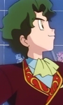
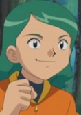

|  |
Bill |
|
Bill is a Pokemon Researcher, widely regarded as an expert in many fields. He believes that there are more than 150 species of Pokemon. |
|  |
Guy |
- Pokemon Advanced Generations
|
Guy is a Pokemon Trainer from the Hoenn Region. He owns a Loudred that he has since it was Whismur. It evolved into an Exploud and stopped listen to Guy. |
 |
Keroberos |
- Cardcaptor Sakura
- Cardcaptor Sakura Movie 2: The Sealed Card
- Cardcaptor Sakura: Clear Card
|
Keroberos is the guardian of sun appointed by Clow Reed. After Clow Reed death, he chooses Sakura to be the next master od the Clow Cards. He becomes good friend with Sakura and her friend Tomoyo. He is bossy, demanding and a glutton but he cares for Sakura. He loves video games and sweets. Masaya Onosaka voices his true form |